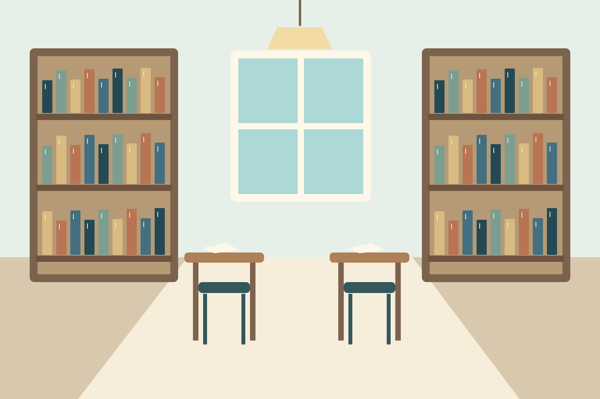
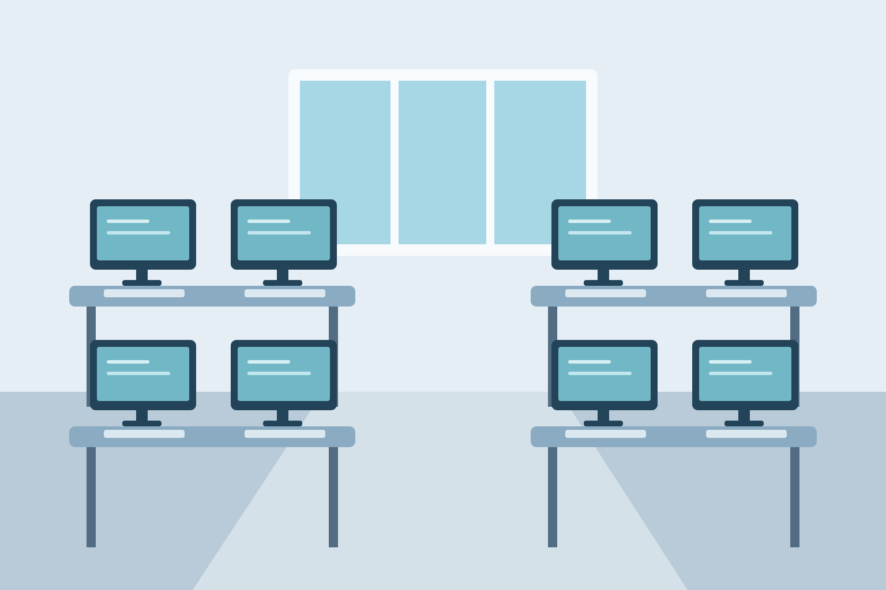
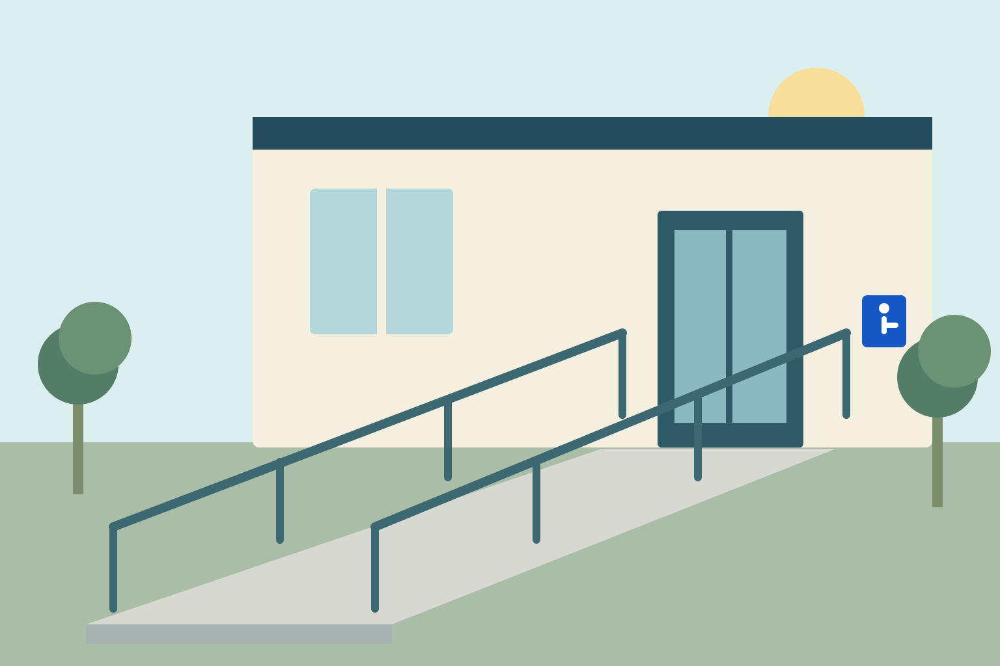

Estudo
Biblioteca Central
Bloco B, térreo · 8h às 21h
Acervo, mesas de estudo e atendimento para consulta. Acesso pela rampa do corredor norte.
Ver detalhes da bibliotecaExplore o campus
Espaços de estudo, tecnologia e caminhos para chegar com mais autonomia.

Estudo
Bloco B, térreo · 8h às 21h
Acervo, mesas de estudo e atendimento para consulta. Acesso pela rampa do corredor norte.
Ver detalhes da biblioteca
Tecnologia
Bloco C, 1º andar · 8h às 22h
Computadores para atividades acadêmicas. Acesso ao andar por elevador.
Ver orientação de chegada ao Bloco B
Acessibilidade
Portão principal → Bloco B
Percurso com rampa e corrimãos até a biblioteca, no térreo do Bloco B.
Consultar acessibilidade